120
B · Competitor Concepts
How to use this brief. Every asset is specced so it can be produced directly. Each gives the exact headline, the visual direction, the format (static 4:5 + 9:16 on a 4:5 safe zone, or 5-15s video), and the landing page. Bucket A clones proven winners (data + alternate headlines). Bucket B rebuilds competitor-proven formats (with example mockups + playable video). Bucket C is the witty new format (each technique fully specced with an example mockup). Produce against the spec line by line.
Performance read | Jun 16-29 · Skyvane CBO campaigns
14-Day Scoreboard
Scale floor 1.2 · Target 1.75 · Stretch 2.0| Campaign | ROAS | Purch | CPA | Spend | Read |
|---|
| Barefoot | 1.71 | 37 | $61 | $2,243 | Scale |
| Orthotics Story | 1.51 | 42 | $70 | $2,955 | Scale |
| Travel | 1.27 | 39 | $80 | $3,102 | Scale |
| Nurse Story | 1.16 | 35 | $96 | $3,352 | Near floor, ad-level wins |
| Legacy PDP | 0.82 | 5 | $132 | $658 | 1 ad winner only |
| Foot Pain Story | 0.71 | 3 | $131 | $393 | Collapsed (was 1.26) |
What moved: Foot Pain's early-June scale did not hold (1.26 to 0.71). Nurse recovered (0.98 to 1.16). Barefoot, Orthotics and Travel hold above 1.2. JUN W2 bets are validating: the biggest single winner is Orthotics Old-vs-New 006 (17 purchases), and the new audiences WideFeet and OnFeet both produced winners. 19 ads cleared ROAS 1.2 at the ad level.
Bucket A · 40 Assets
Iterate The Proven Winners
Clone each winner below, change one variable per variation (headline, opening visual, testimonial, or colorway). Weight new variations toward Old-vs-New, WideFeet and OnFeet. Static 4:5 + 9:16.
Winning creatives to clone
16 ads · ROAS ≥ 1.2 (Jun 16-29)Each card is one proven ad: the exact on-creative headline, why it won (tied to the 14-day numbers), and two alternate headlines to test on the clone. Change ONE variable per variation. Read the red flags before scaling those creatives.
Orthotics → /orthotics-exit · 3 winners
“Old way: prop the arch. New way: build it.”
1.59 ROAS17 purchases$1174 spendOld-vs-New
Why it wonBiggest winner of the batch. It absorbed the most spend ($1,174) and drove the most purchases (17) at 1.59. The split-screen reframes orthotics as a temporary crutch and [vrsn] as the permanent fix, converting high-intent orthotics shoppers with no medical claim. The 'build, not prop' idea is the campaign's most scalable story.
Alternate headlines to test- Orthotics prop your arch up. [vrsn] teaches it to hold itself.
- Stop renting support. Start building it.
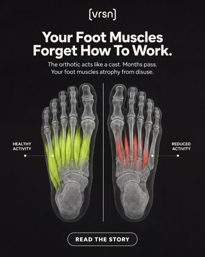
APR W4 · 0024
“Your foot muscles forget how to work.”
1.46 ROAS13 purchases$974 spendProblem-mechanism
Why it wonSecond-highest volume (13 purchases, $974) at 1.46. Pure problem-mechanism on a clean foot diagram: it names the hidden cost of constant support so the viewer self-diagnoses, without [vrsn] asserting their condition. Holds spend at scale.
Alternate headlines to test- Support that never lets your foot do its job.
- The arch you keep propping is the one that keeps weakening.
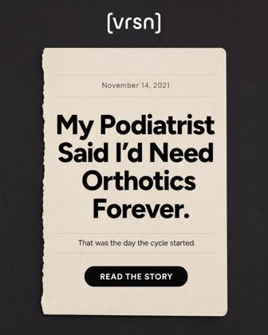
APR W4 · 0010efficiency flag · small spend
“My podiatrist said I'd need orthotics forever.”
2.18 ROAS1 purchases$50 spendAuthority reversal
Why it won2.18 on just $50, a strong efficiency signal to scale. The first-person authority-reversal promises a myth gets broken, which earns the click. Unproven at volume, so scale to confirm.
Alternate headlines to test- I was told orthotics were forever. Here is what changed.
- The 'orthotics for life' sentence nobody questions.
Barefoot → /barefoot · 4 winners
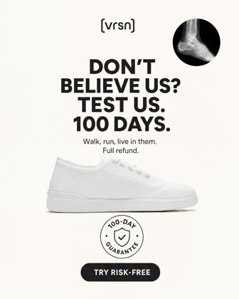
APR W4 · 0045efficiency flag · small spend
“Don't believe us? Test us. 100 days.”
6.54 ROAS4 purchases$67 spendRisk-reversal dare
Why it wonHighest ROAS in the whole batch (6.54) on a $67 test, the clearest efficiency flag to scale. The dare plus the 100-day guarantee transfers all risk to [vrsn] and converts skeptics. Validate at higher spend.
Alternate headlines to test- Prove us wrong. You have 100 days.
- We will bet 100 days you won't send them back.
“100 days to let wide feet decide.”
1.45 ROAS8 purchases$595 spendWide-feet + guarantee
Why it wonWideFeet volume leader (8 purchases, $595) at 1.45, proof the new wide-feet segment scales. Pairs the fit promise with the guarantee to kill the 'will it fit' objection.
Alternate headlines to test- Wide feet, meet a wide toe box.
- Built wide on purpose. Decide in 100 days.
“Room for the foot you actually have.”
1.87 ROAS2 purchases$120 spendWide-feet fit
Why it won1.87 in the new WideFeet audience. The exact-fit promise speaks to the wide-footed shopper's lived frustration. Scale alongside 011 to grow the segment.
Alternate headlines to test- Your foot isn't narrow. Your shoes shouldn't be either.
- A toe box shaped like a foot, not a wedge.
“The exit ramp from zero-drop.”
1.63 ROAS6 purchases$359 spendTransition objection
Why it won6 purchases at 1.63. Pre-handles the barefoot shopper's fear of an abrupt zero-drop switch by framing [vrsn] as the safe on-ramp, converting the cautious buyer.
Alternate headlines to test- Barefoot feel, without the cold-turkey switch.
- Ease into natural movement. Don't jump.
Travel → /travel · 4 winners
“No break-in. Wear them off the plane.”
1.95 ROAS8 purchases$438 spendNo break-in
Why it wonTop Travel ROAS at volume (1.95, 8 purchases). 'No break-in' maps exactly onto travel anxiety (new shoes plus a trip equals blisters). Concrete and instantly understood.
Alternate headlines to test- Unbox at the gate. Walk all day.
- New shoes, zero blisters, day one of the trip.
“100 days to test it on a real trip.”
1.69 ROAS11 purchases$620 spendGuarantee + travel
Why it wonTravel volume leader (11 purchases, $620) at 1.69. Ties the guarantee to the use case, try them on a real trip risk-free, right when the buyer needs confidence.
Alternate headlines to test- Take them on the trip. Decide after.
- Your next trip is the fitting room.
“The city walker for every trip.”
1.56 ROAS4 purchases$286 spendTravel identity
Why it wonSteady 1.56 at moderate spend. Sells a clear identity (the all-day city walker) the traveler buys into.
Alternate headlines to test- Miles of cobblestone, one pair of shoes.
- The only shoes your trip needs.
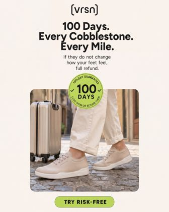
APR W4 · 0042efficiency flag · small spend
“100 days. Every cobblestone. Every mile.”
1.54 ROAS1 purchases$56 spendGuarantee + imagery
Why it won1.54 on a $56 test, a scale candidate. Guarantee plus vivid travel imagery (cobblestones, miles) makes all-day comfort tangible.
Alternate headlines to test- Every mile, every street, covered.
- Walk the whole city. Send them back if they fail.
Nurse → /foot-pain · 3 winners
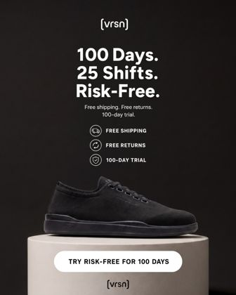
APR W4 · 0048
“100 days. 25 shifts. Risk-free.”
1.62 ROAS14 purchases$1022 spendOccupational risk-reversal
Why it wonNurse volume and spend leader (14 purchases, $1,022) at 1.62, and the campaign's safest scaler. Translates the guarantee into the nurse's own unit (shifts), with the risk-reversal stack (free shipping, free returns, 100-day trial) closing.
Alternate headlines to test- 25 shifts to change your mind. On us.
- A full month of shifts, fully refundable.
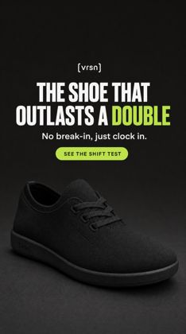
JUN W2 · 014
“The shoe that outlasts a double.”
1.59 ROAS5 purchases$386 spendOn-Feet durability
Why it wonProves the OnFeet audience scales (5 purchases, $386) at 1.59. Occupational durability in the nurse's language ('a double'), with 'clock in' reinforcing the work context.
Alternate headlines to test- Built for the back half of a double.
- Twelve hours in, still comfortable.
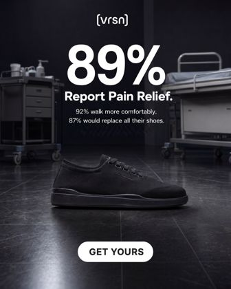
APR W4 · 005efficiency flag · small spend
“89% report pain relief.”
2.69 ROAS1 purchases$48 spendBig-number proof
Why it wonHighest Nurse ROAS (2.69) but on $48 (1 purchase), an efficiency signal rather than proven volume. Clone the big-number-plus-setting layout, not the numbers.
Alternate headlines to test- Built for the longest shifts.
- The shoe nurses keep re-buying.
Compliance flag: The 89% / 92% / 87% figures are unsubstantiated, a Meta health and false-claim risk. Replace with a real, verifiable proof point (or drop the percentages) before scaling.
Foot Pain → /foot-pain · 1 winner
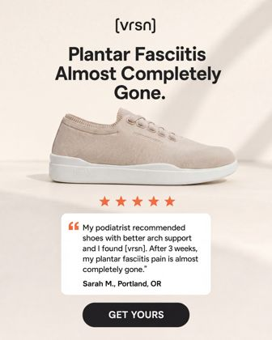
APR W4 · 028
“Plantar fasciitis almost completely gone.”
1.58 ROAS2 purchases$109 spendTestimonial
Why it wonThe only Foot Pain ad above the 1.2 floor (1.58) while the campaign overall collapsed to 0.71, so it carries the angle. Keep the testimonial layout.
Alternate headlines to test- The morning step that used to hurt.
- What finally gave my feet a break.
Compliance flag: The headline reads as a cure claim and the testimonial asserts a personal health outcome, both Meta personal-attribute risks. Soften to observational ('many people report their morning pain eases') before scaling.
Legacy PDP → PDP (warm / retargeting) · 1 winner
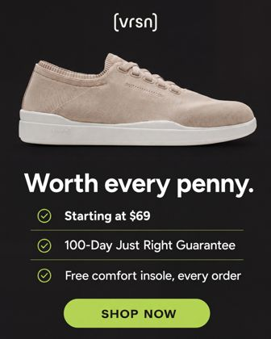
APR W4 · 0049
“Worth every penny.”
2.81 ROAS4 purchases$161 spendValue / offer
Why it wonThe lone PDP winner (2.81, 4 purchases) while the PDP campaign sat at 0.82, the one creative carrying it. Bottom-funnel value framing (guarantee plus free insole) closes the warm shopper.
Alternate headlines to test- The last everyday shoes you'll need.
- Comfort you don't have to break in.
Compliance flag: It shows price ($69). Keep price out of cold/prospecting creative; use the priced version on PDP/retargeting only and only if approved.
Bucket B · 120 Assets · The big bet
Competitor-Proven Concepts
Formats running 4-6+ months across the category. Borrow the FORMAT, never the claim. Static 72 + Short video (5-15s) 48.
Signal basis & guardrail
structure only, not the claimWinner signal = how long an ad runs + how many live variants exist (no spend data is public for these). Hard guardrail: competitors win with aggressive health claims ("eliminates foot pain", "prevents falls", "podiatrist-designed", invented review counts). [vrsn] copies the STRUCTURE only and stays observational: no cure words, no competitor names, no invented stats. Real proof we own: 100-day guarantee, No Break-In, wide toe box, 4 colorways.
Competitor reference board
11 ads currently runningReal competitor ads running right now, grouped by the format each one demonstrates. Under each is why we are recommending it for [vrsn]. Borrow the structure, never the claim.
Objection reversal
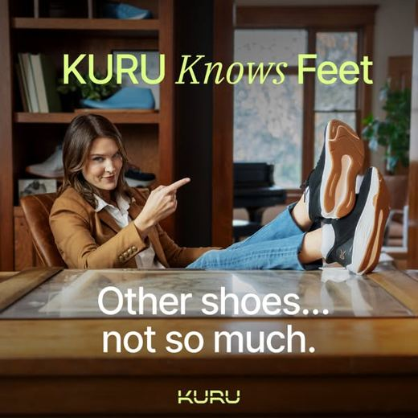
KURU"Don't Let Foot Pain Win" · running 365 daysWhy for [vrsn][vrsn]'s clean silhouette IS the proof of this 'doesn't look like a comfort shoe' promise. The category's strongest evergreen, so it is the safest bet to adapt.
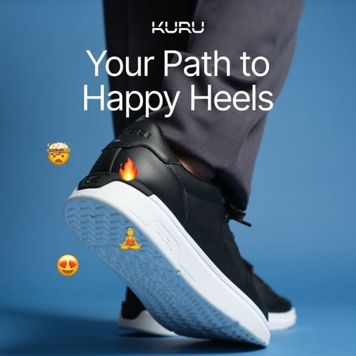
KURU"Looks Good, Feels Even Better"Why for [vrsn]Same wedge, softer execution. Pair the plain look with the comfort payoff for a warmer, less salesy variant.
Problem-mechanism
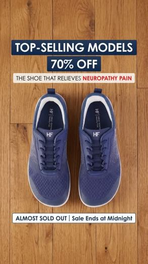
HIKE"Why The Tingling Never Stops"Why for [vrsn]Name a fit problem (narrow, stiff) then show the [vrsn] fix (wide, flexible). Highest-engagement static format we found. Keep it observational, never a diagnosis.
Proof-stack
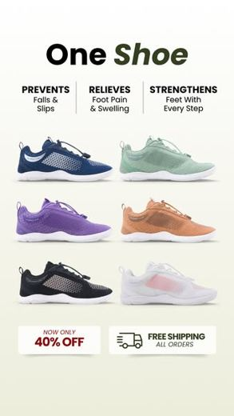
HIKE"Best Pain Relief" · benefit checkmarksWhy for [vrsn]Steal the benefit-checklist layout and swap their claims for [vrsn]'s real proof (wide toe box, no break-in, 100-day guarantee).
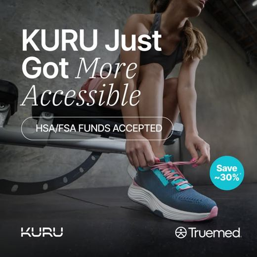
KURU"Invest in Your Foot Health"Why for [vrsn]The proof-bar plus value frame. We skip HSA/FSA but keep the clean stacked-benefit treatment.
Guarantee-led
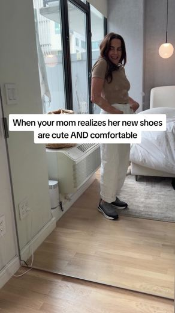
ORTHOFEET"Walk With Comfort or Money Back"Why for [vrsn]Lead with the guarantee. [vrsn]'s 100-day money-back is an exact match and our single strongest risk-reversal asset.
Premium hero
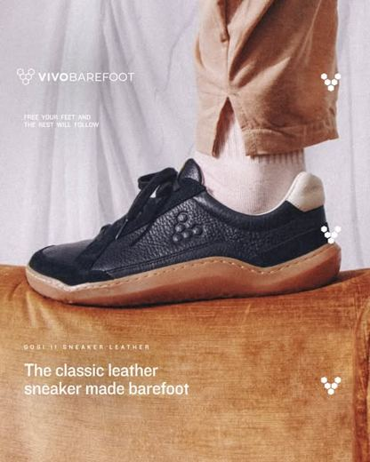
VIVOGobi II leather sneakerWhy for [vrsn]Premium, minimal hero for the barefoot/strength angle. Aspirational, not clinical, which differentiates [vrsn] from the loud DR look.
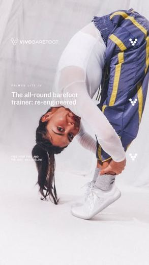
VIVOPrimus Lite IVWhy for [vrsn]Clean studio product hero for /barefoot. Sells the design and materials, good for a quieter, brand-building variant.
Named testimonial
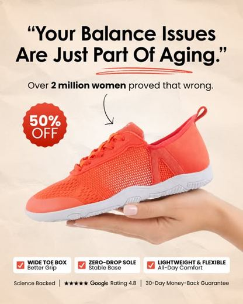
HIKE"Prevents Falls" testimonialWhy for [vrsn]The named-quote layout converts. Use ONLY real [vrsn] testimonials and drop any medical/falls claim.
Offer / scarcity
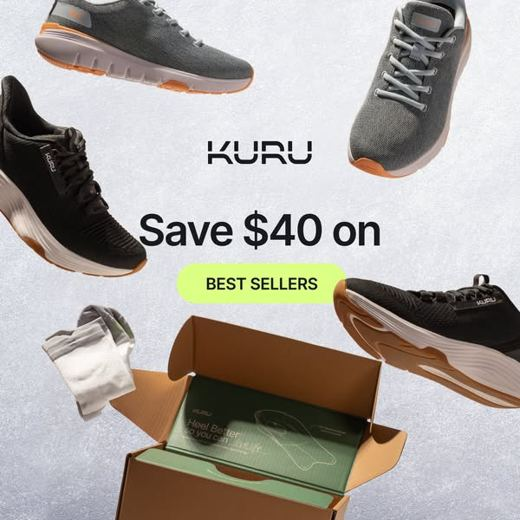
KURU"Save Big on Heel Support"Why for [vrsn]Offer/scarcity layout for STATIC only, never video. Keep any discount truthful and time-bound.
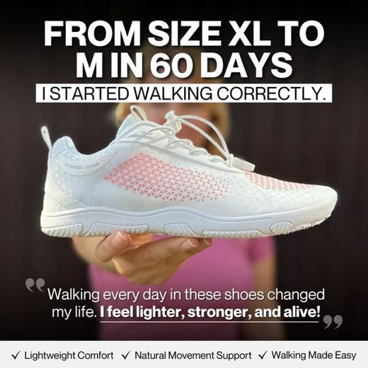
HIKE"Best Walking Shoe"Why for [vrsn]The everyday-walking angle. Positions the shoe for daily movement, a broad top-funnel hook.
B1 · Static concepts (72)
4:5 + 9:16 · 4:5 safe zoneFormat & safe zone (applies to every static below)Build the master at 9:16 (1080 x 1920). Keep every critical element, the [vrsn] logo, headline, product and CTA, inside the centred 4:5 safe zone (1080 x 1350, the middle band). The top and bottom strips are background bleed only, so the one master crops cleanly to 4:5 and 1:1. Deliver 4:5 and 9:16 for each concept.
Format 1 · "Looks nothing like a comfort shoe" (objection reversal) 18 assets
Reference: KURU objection-reversal (running 365 days). [vrsn]'s clean silhouette literally owns this wedge.
15 headline options (strong, human-written)
- It looks like a normal sneaker. That's the whole trick.
- Comfort shoes don't have to look like comfort shoes.
- The support is hidden. The comfort isn't.
- Foot-shaped, not orthopedic-shaped.
- Nobody can tell they're the comfiest shoes you own.
- No clinical look, no chunky sole, just a clean shoe that works.
- Orthopedic comfort without the orthopedic look.
- The comfort shoe that doesn't announce itself.
- You'd never guess these were built for sore feet.
- Quietly the most comfortable shoes in the room.
- Looks like a sneaker. Feels like relief.
- We hid the comfort where you can't see it.
- Support that doesn't look like a medical device.
- Finally, a comfort shoe you'd actually wear out.
- Plain on the outside. Engineered on the inside.
Visual directionProduct hero on bone (#F2F0F0), the plain silhouette doing the talking. Headline lower third, one lime accent word, small lime PRO chip. Master 9:16, all of logo + headline + product + CTA inside the 4:5 safe zone.
Send to/barefoot or /orthotics-exit
Example asset (4:5)[vrsn]
IT LOOKS LIKE A NORMAL SNEAKER. THAT'S THE TRICK.
looks normal · works hard
See the fit →
Format 2 · Problem-Mechanism hook 18 assets
Reference: HIKE "Why The Tingling Never Stops". Name the hidden cause, then the fix. Stay observational, no diagnosis.
15 headline options (strong, human-written)
- Your feet are tired by 4pm because of the shoe, not the day.
- A narrow toe box squeezes every single step.
- Stiff soles make your feet stop doing their job.
- Most shoes do the walking for your feet. Then your feet forget how.
- The reason your inserts stopped working, in one picture.
- Cushion hides the problem. It doesn't fix it.
- Crammed toes can't share the load, so they ache.
- The arch you keep propping is the arch that keeps weakening.
- Give your toes room and watch what changes.
- Your shoe shape is the part nobody questions.
- Same feet, different shoe, different day.
- When the sole won't bend, your foot pays for it.
- The fix isn't more support. It's more room.
- Tired feet are often a fit problem, not an age problem.
- Let the foot move the way it's built to.
Visual directionDiagram-style static on dark. Coral CON callout on the problem (narrow/stiff), lime PRO on the [vrsn] fix (wide/flex), product as evidence. No body-in-pain imagery. 9:16 master, content inside the 4:5 safe zone.
Send to/foot-pain or /orthotics-exit
Example asset (4:5)[vrsn]
YOUR FEET ARE TIRED BY 4PM. IT'S THE SHOE SHAPE.
✗ narrow + stiff
✓ wide + flexible
See why →
Format 3 · Proof-stack + guarantee bar 15 assets
Reference: Orthofeet + KURU benefit/proof bar. Use only substantiated proof.
15 headline options (strong, human-written)
- Wide toe box. No break-in. 100-day guarantee.
- Try them for 100 days. Your feet make the call.
- Comfortable from the first step, not the tenth wear.
- Real returns, real guarantee, zero break-in.
- Everything your feet want, nothing they don't.
- Built to wear all day, starting day one.
- Four colorways, one very comfortable shoe.
- No break-in period, no buyer's remorse.
- The checklist your feet would write.
- 100 days to fall in love or send them back.
- Wide where it counts, light everywhere else.
- Comfort you can return if we're wrong.
- The shoe that earns its spot in your rotation.
- Made to be the pair you reach for first.
- Everything we promise, backed for 100 days.
Visual directionProduct plus a fixed benefit bar (lime checks), guarantee as the closer. No invented star counts or 'podiatrist' claims unless brand-substantiated. 9:16, safe-zone respected.
Send to/foot-pain or /barefoot
Example asset (4:5)[vrsn]
EVERYTHING YOUR FEET WANT.
✓ Wide toe box
✓ No break-in
✓ 4 colorways
✓ 100-day guarantee
Try 100 days →
Format 4 · Premium product hero 12 assets
Reference: Vivobarefoot. Strength/health framing, aspirational, minimal.
15 headline options (strong, human-written)
- Built to make your feet stronger, not lazier.
- The knit sneaker that lets your foot do its job.
- Strength you build just by walking.
- Engineered to move the way you do.
- A shoe that works with your foot, not over it.
- Natural movement, quietly engineered.
- The everyday shoe your feet have been asking for.
- Less shoe, more foot, better days.
- Designed around the foot, not the trend.
- Comfort that looks as good as it feels.
- Made to disappear on your feet.
- Simple on purpose, comfortable by design.
Visual directionClean premium product hero on dark, knit-texture macro, lots of negative space. Headline minimal. 9:16 master with the product centered in the 4:5 safe zone.
Send to/barefoot
Example asset (4:5)[vrsn]
BUILT TO MAKE YOUR FEET STRONGER, NOT LAZIER.
Meet [vrsn] →
Format 5 · Named-testimonial quote 9 assets
Reference: Hike "Linda, 62" / Orthofeet "-Julene". REAL testimonials only.
15 headline options (strong, human-written)
- "First shoe that kept up with my whole shift."
- "I stopped dreading the end of the day."
- "Comfortable out of the box, no break-in."
- "I bought a second pair the next week."
- "My feet finally get a say."
- "These replaced every other shoe I own."
- "On my feet all day and I forget I'm wearing them."
- "Wide enough for my feet, finally."
- "The only sneakers that don't leave my feet aching."
Visual directionQuote card on a product or on-foot shot, five coral stars, real name + role. Bone background. 9:16, quote + stars + product inside the 4:5 safe zone.
Send to/foot-pain or /travel
Example asset (4:5)[vrsn]
★★★★★
“First shoe that kept up with my whole shift.”
Jordan, RN
Get yours →
B2 · Short-form video 5-15s (48 assets) · playable references
9:16 + 1:1Press play on each reference. These are the proven short structures to rebuild for [vrsn]. Rules: hook in the first 2 seconds, keep offers OUT of video, close on the shoe + 100-day guarantee, deliver 9:16 and 1:1. Voiceover, on-screen text or music are all fine.
KURU 11s · Hard-pass demo 18 assets
Why it worksThe proven champion: 336 days live and the single most-replicated video in the category (15+ variants). Dismiss the alternative, then show the mechanism.
Structure0-2s: text hook dismissing the old shoe ('Stiff, narrow shoes? Hard pass.')
2-7s: product demo, toe-splay, sole bend, flex in hand
7-11s: clean shoe beauty shot + 100-day guarantee line
[vrsn] cut: dismiss stiff/narrow shoes, then flex the knit upper and foam sole in hand. Close on the guarantee. LP: /barefoot or /orthotics-exit.
KURU 6s · Oddly-satisfying tech loop 15 assets
Why it worksA 2026 scaling bet: a pure macro of the sole tech, built as a cold scroll-stopper that loops.
StructureFull 6s: extreme close-up of the foam sole compressing and rebounding, knit flexing
One short text overlay ('watch it move with you')
Mechanism only, no offer
[vrsn] cut: macro of the foam outsole compressing and the knit stretching over the toes. Loopable. Voiceover optional, music or text overlay both work. LP: /barefoot.
ORTHOFEET 6s · 'Looks ordinary, isn't' montage 8 assets
Why it worksA proven 6s format: fast product-in-context cuts with a text overlay.
StructureQuick cuts across contexts (street, errands, travel)
Text overlay: 'Looks ordinary. It isn't.'
Close on the shoe
[vrsn] cut: the plain silhouette across a city day, ending on 'looks normal, works hard'. LP: /travel or /foot-pain.
ORTHOFEET 15s · Collection montage 7 assets
Why it worksThe 15-second sibling: more contexts, same montage structure, ending on a product + guarantee card.
StructureLifestyle montage across multiple settings
Light text overlays per cut
End card: product + 100-day guarantee
[vrsn] cut: one shoe, four contexts (commute, work, errands, evening), end card with the guarantee. LP: /travel.
Bucket C · 90 Assets · New format
The 9 Pattern-Interrupt Techniques
Witty, scroll-stopping, brand-building hooks for people who tune out normal ads. 10 assets per technique. Static 4:5 + 9:16. Each fully specced below with an example mockup.
The 9 techniques, fully specced
90 assets · 10 eachEach technique is a complete recipe with an example asset (4:5 mockup) on the right: what it is, why it stops the scroll, the formula, five ready [vrsn] headlines, the visual direction, and the landing page. Witty, top-funnel, Meta-safe (no cure words, no price, no personal-health call-outs).
1 · Self-Deprecation
What it isAdmit an unglamorous truth about the product, then reframe it as the whole point.
Why it worksPeople distrust ads that only brag. An honest flaw makes the brand feel credible and human, which raises the believability of the real claim that follows.
Formula[Admit something plain/unflashy about vrsn] + [reveal that it IS the benefit].
5 [vrsn] headlines- The most boring-looking shoe we could design. On purpose.
- We spent two years making a shoe that looks like a shoe.
- Not the flashiest sneaker on the shelf. Quietly the comfiest.
- No logo you'll recognize, no hype, just a really good shoe.
- We're bad at making shoes that turn heads. Great at making feet happy.
VisualPlain product on bone (#F2F0F0). Big caps line, one lime accent word, lots of whitespace. Anti-flashy on purpose.
Send to/barefoot or /orthotics-exit
Example asset (4:5)[vrsn]
THE MOST BORING-LOOKING SHOE WE COULD DESIGN. ON PURPOSE.
Wide toe box. No break-in. 100-day guarantee.
See the boring shoe →
2 · Understatement
What it isState your biggest advantage flatly, as if it is no big deal.
Why it worksOverstatement triggers ad-skepticism. A calm, confident tone feels true, and the gap between the small tone and the big benefit makes the reader fill in the impressed reaction themselves.
Formula[A real, strong benefit] + [delivered with a shrug].
5 [vrsn] headlines- A sneaker for people who, you know, walk.
- Wide toe box. Because feet are kind of wide.
- Foot-shaped. Wild concept, we know.
- Comfortable shoes. Revolutionary, apparently.
- We made room for your toes. You're welcome, I guess.
VisualDeadpan single line, product small, generous negative space. The calm layout is the joke.
Send to/barefoot
Example asset (4:5)[vrsn]
FOOT-SHAPED. WILD CONCEPT, WE KNOW.
A toe box the actual shape of a foot.
Have a look →
3 · Downsides
What it isLead with a playful negative consequence of owning the product that is secretly a flex.
Why it worksAds never lead with a negative, so it stops the scroll. And the 'downside' is actually a benefit in disguise, so it sells while disarming.
Formula'Warning / Side effect: [funny consequence that implies how good it is].'
5 [vrsn] headlines- Warning: you may start judging everyone else's shoes.
- Side effect: your old shoes will feel like cardboard.
- Fair warning: going back to narrow shoes gets hard.
- Caution: you'll want a pair in every color.
- Heads up: your other sneakers are about to feel neglected.
VisualMock 'warning label' styling. Coral (#F36D4E) accent on the warning word, product below.
Send to/foot-pain or /barefoot
Example asset (4:5)[vrsn]
SIDE EFFECT: YOUR OLD SHOES WILL FEEL LIKE CARDBOARD.
No break-in. Wide toe box.
Risk it →
4 · Reverse World
What it isFlip the category cliche. Say the opposite of what a shoe ad usually says.
Why it worksIt subverts the script the reader expects ('more cushion, more support'), which forces a stop and a re-read.
FormulaTake a category cliche and invert it ('less is the point').
5 [vrsn] headlines- We didn't add arch support. We made room for your arch.
- Less shoe. More foot.
- Box toe? No. Toe box.
- The support is that there's less of it.
- Most shoes do the walking for you. Ours lets you do it.
VisualTwo-part flip with a lime pivot word. Minimal, typographic.
Send to/orthotics-exit or /barefoot
Example asset (4:5)[vrsn]
LESS SHOE. MORE FOOT.
Flexible knit, foam sole, wide toe box.
See how →
5 · Self-Aware Ad
What it isBreak the fourth wall and openly admit it is an ad.
Why it worksNaming the ad disarms the reader's ad-defenses and feels refreshingly candid, which buys you the next two seconds of attention.
Formula[Acknowledge this is an ad] + [the one honest reason to care].
5 [vrsn] headlines- Yes, this is an ad for a shoe. It's a good shoe though.
- We could've made this ad fancier. We'd rather make the shoe better.
- This is the whole pitch: wide toe box, no break-in, 100-day guarantee.
- An ad, sure. Also the comfiest shoe we know how to make.
- Skip the ad if you love your current shoes. Otherwise, hi.
VisualLooks like a plain note or text post, almost anti-design. Minimal brand furniture, product small.
Send toany campaign
Example asset (4:5)[vrsn]
YES, THIS IS AN AD FOR A SHOE. IT'S A GOOD SHOE THOUGH.
Wide toe box, no break-in, 100-day guarantee.
Fine, show me →
6 · Absurd Exaggeration
What it isExaggerate the benefit to a comic, impossible degree (the 'Chuck Norris' move).
Why it worksThe over-the-top claim is obviously a joke, so it entertains and gets shared while still planting the real benefit (light, comfortable, wide).
Formula'[Benefit] so [extreme] that [absurd consequence].'
5 [vrsn] headlines- So light you'll check if you're wearing shoes.
- So comfortable you'll forget where you parked.
- Wide enough your toes are sending thank-you cards.
- So easy to walk in your smartwatch thinks you're cheating.
- Comfortable enough to make your old shoes jealous.
VisualPlayful, bold line, optional tiny illustrative cue. Energy in the type.
Send to/barefoot or /travel
Example asset (4:5)[vrsn]
SO LIGHT YOU'LL CHECK IF YOU'RE WEARING SHOES.
Knit upper, foam sole.
Feel it →
7 · Tricky Threes
What it isList three things; the first two are normal and the third breaks the pattern.
Why it worksThe rule of three plus a twist on the last item is inherently satisfying and memorable, and the twist carries the selling point.
Formula'[normal], [normal], and [unexpected twist].'
5 [vrsn] headlines- Light, breathable, and weirdly hard to take off at night.
- Comfortable, durable, and not trying too hard.
- Wide, flexible, and the last shoe argument with your feet.
- Slip on, walk out, forget they're there.
- Beige, black, navy, and zero break-in.
VisualThree-line stack, the third line in lime. Clean list layout.
Send to/travel or /barefoot
Example asset (4:5)[vrsn]
COMFORTABLE, DURABLE, AND NOT TRYING TOO HARD.
The everyday knit sneaker.
Meet them →
8 · Reverse Psychology
What it isTell the reader NOT to buy, or not to do the thing you want.
Why it worksA confident 'don't' triggers curiosity and reactance, and implies the product doesn't need to beg, which raises its status.
Formula'Don't buy these if [a reason that is secretly a benefit].'
5 [vrsn] headlines- Don't buy these if you love breaking in new shoes.
- Not for people who enjoy stiff, narrow shoes.
- Keep your inserts. Unless you're curious.
- Don't bother if you've already found your forever shoe.
- Please keep overpaying for shoes that hurt.
VisualBold 'DON'T' in coral, product below. Stark, confident.
Send to/barefoot or /orthotics-exit
Example asset (4:5)[vrsn]
DON'T BUY THESE IF YOU LOVE BREAKING IN NEW SHOES.
Because there's nothing to break in.
Ignore this ad →
9 · Slap 'n Hug
What it isOpen with a blunt negative (the slap), then flip to the reassuring positive (the hug).
Why it worksThe negative grabs attention and validates the reader's frustration; the flip delivers relief with [vrsn] as the answer.
Formula'[Blunt negative truth]. [Reassuring flip to vrsn].'
5 [vrsn] headlines- Most sneakers fight your foot. This one works with it.
- Breaking in shoes is miserable. So we skipped it.
- Narrow shoes wreck wide feet. Ours are built wide.
- Cushioning hides the problem. We built the shoe around your foot.
- Stiff soles make your feet work harder. Ours flex with you.
VisualTwo-beat layout. Top line darker or coral (the slap), payoff line in lime (the hug).
Send to/foot-pain or /barefoot
Example asset (4:5)[vrsn]
BREAKING IN SHOES IS MISERABLE. SO WE SKIPPED IT.
Comfortable from the first step.
Skip the break-in →
Standing Instruction
Three buckets, one batch. A (40) doubles down on proven ad-level winners. B (120) rebuilds competitor-proven formats, structure borrowed not claims. C (90) is the witty pattern-interrupt format to lift CTR and brand affinity.
Borrow format, never the claim. No cures, eliminates, or prevents. No "podiatrist-designed/endorsed" unless brand-substantiated. No invented stats or star counts. No competitor names. No price in cold creative. Real proof we own: 100-day money-back guarantee, No Break-In, wide toe box, 4 colorways.
Format. Every static is built 9:16 with all critical content inside the 4:5 safe zone, delivered as 4:5 and 9:16. Offers live in static only; videos stay offer-free and mechanism-led, hooked in the first 2 seconds. Voiceover, text or music all fine on video.
Brand + product accuracy. Silka caps headlines, Figtree body, [vrsn] always in brackets (never the rounded-parens render that recurred last batch), knit upper, 4 eyelets, correct colorways, embossed sole logo in sole-tone. White and Black colorways kept rendering as flat canvas / 5-eyelet last batch. Fix at the source.
Naming: Blitzads - VRSN - [Bucket] - [Concept/Format] JULW1 - [number]. Buckets: Iterate / Competitor / Format9. Reset to 001 per bucket.
Real testimonials only for any star-rating creative. Replace placeholders before launch. Read the compliance flags in Bucket A before scaling those three creatives.